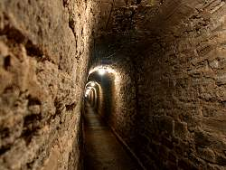

| In English |
| In English |
Barbarossahöhle
Touristische Informationen:
|  |
| Bild: historischer Eingangsstollen. |
| Ort: | A7 Ausf Seesen (Harz), B243 66km bis Nordhausen, F80 16km bis Berga, F85 Richtung Bad Frankenhausen, nach 12km rechts ab Richtung Rottleben. Zwischen Steinthalleben und Rottleben, am Kyffhäuser. 1.5km NW Rottleben, 5km NW von Bad Frankenhausen. (30,Lf40) |
| Öffnungszeiten: | Apr-Okt tägl 10-17, Nov-März Di-So 10-16. [2003] |
| Eintrittspreise: |
Erwachsene EUR 6, Kinder (-14) EUR 4, Familien (2+5) EUR 16. Gruppen (20+): Erwachsene EUR 5, Kinder EUR 3. [2003] |
| Typ: |
|
| Licht: | elektrisch |
| Dimension: | L=1,100m, 154m N.N., T=9°C, größter See: L=50m, T=3m |
| Führungen: |
L=800m, D=40min, St=31, V=100.000/a [1999]. Führungsweg in der Höhle: 600m. Eingangsstollen: L=168m, 1898. Ausgangsstollen: L=30m, 1926. ( |
| Fotografieren: | |
| Zugänglichkeit: | |
| Literatur: |
Anon (oJ):
Die Barbarossahöhle im Kyffhäuser,
Hrsg: Einrichtung Erholungswesen, 06567 Rottleben/Kyffhäuser, Tel: +49-3467-4586-2033 |
| Adresse: |
Barbarossahöhle Rottleben, Mühlen 6, 06567 Rottleben, Tel: +49-34671-5450, +49-34671-54513 (Besucherservice), Fax: +49-34671-54514.
E-mail: |
| Nach unserem Wissen sind die Angaben für das in eckigen Klammern angegebene Jahr korrekt. Allerdings können sich Öffnungszeiten und Preise schnell ändern, ohne daß wir benachrichtigt werden. Bitte prüfen Sie bei Bedarf die aktuellen Werte beim Betreiber, zum Beispiel auf der offiziellen Website in der Linkliste. | |
| Stand: | $Date: 2015/11/20 13:24:33 $ |
Geschichte
 |
| Bild: Gipslappen in der Gerberei. |
| 1860 | Vortrieb eines Stollen für den Kupferschieferbergbau durch den Unternehmer von Born aus Dortmund. | |
| 20-DEC-1865 | nach 178m Streckenlänge Anschnitt der Höhle durch die Bergleute Christian Nachtweide, August Schumann und Heinrich Vollrodt. | |
| 1866 | Ausbau und Eröffnung als Schauhöhle unter dem Namen Falkenburger Höhle. | |
| 19-AUG-1869 | Heinrich Vollrodt in der Höhle tödlich verunglückt. | |
| 1891 | Besitzerwechsel und Umbenennung in Barbarossahöhle, aus Werbegründen Errichtung des Tisch und Stuhl des Barbarossa und Einrichtung des Tanzsaals. | |
| 1895 | elektrische Beleuchtung. | |
| 1898-1899 | Bau des neuen Eingangsstollens. | |
| 1913 | Eingehende Untersuchung und Vermessung durch Dr. A. Berg. | |
| 1926 | Bau eines Ausgangsstollens. | |
| 07-APR-1935 | Entdeckung einer Fortsetzung durch Dr. Stolberg. |
Bemerkungen
 |
| Bild: Höhlenbesucher in der Gerberei. |
Die Barbarossahöhle wird durch einen langen Stollen betreten. Während der Führung wird sie fast auf ihre ganze Länge begangen. Nur ein kleiner Teil, der für den Ausbau zu niedrig ist wird nicht besucht. Im allgemeinen hat die Höhle einen sehr großräumigen Charakter.
Die Höhle besitzt mehrere große Seen, die durch den außerordentlich hohen Gipsgehalt des Wassers eine besondere grüne Färbung aufweisen. Dies ist auf die besondere Filterung des einfallenden Lichts durch den gelösten Gips zurüchzuführen. Das Wasser wirkt völlig klar und sauber und weist nach Messungen außergewöhnlich wenig Trübstoffe auf. Die Grünfärbung wird erst bei einer größeren Wassertiefe erkennbar.
Das umgebende Gestein besteht aus Anhydrit (CaSO4). Die einzelnen Schichten sind 1-2cm dick und durch eine feine graue Tonschicht getrennt. Durch Aufnahme von Wasser aus der Höhlenluft wandelt sich der Anhydrit in Gips um. Dabei vergrößert sich das Volumen des Gesteins, wodurch sich die einzelnen Schichten auffalten. Dies führt dazu, dass die Decke den Eindruck eines Blätterteigs macht.
 |
| Bild: der See, in dem sich die Gipslappen der Gerberei spiegeln, wurde künstlich angelegt um sie zu schützen. |
In der Gerberei sind diese Blätter sogar zu richtigen Deckenlappen angewachsen, die bis zu 1m von der Decke herunterhängen. Bei der Entdeckung sollen diese Lappen über 2m heruntergehangen sein, wurden aber von Besuchern abgeschlagen. Die nur 2cm dicken Gipsschichten mit ihrer gräulichen Färbung durch die eingelagerten Tonschichten und ihrer lappigen Form wirken wie große gegerbte Häute und haben zum Namen dieses Raums geführt.
Im Wolkenhimmel wurden Stufen und eine Tafel mit der Aufschrift Barbarossahöhle angelegt, und bieten so die Möglichkeit für Gruppenfotos. Hier werden von einem Fotografen Bilder der Führungsgruppe gemacht, die man nach der Führung am Ausgang kaufen kann.
Eine weitere Sehenswürdigkeit ist der Tisch und Stuhl von Barbarossa. Diese wurden aus Werbegründen vor hundert Jahren erstellt, um die Sage von Barbarossa (siehe unten) zu beschwören.
Hier ist auch noch der Entdeckerstollen sichtbar. Er wurde zum Abbau von Kupferschiefer angelegt. Direkt unter der Anhydritschicht befindet sich eine dünne Kupferschieferschicht, die durch den weichen Anhydrit leicht zu erreichen ist. Außerdem wurden häufig Höhlen, sogenannte Schlotten angeschnitten, die den Abraum aufnahmen.
Am Schluß der Führung wird die Höhle durch einen dritten Stollen verlassen.
 |
| Bild: einer der vielen Seen der Barbarossahöhle. |
Nach ihrer Entdeckung wurde die Höhle nach einer nahegelegenen Ruine Falkenburger Höhle genannt. Durch ihre Lage im Kyffhäuser wurde sie von Anfang an mit der Barbarossasage in Verbindung gebracht. Mit dem zunehmenden Deutschnationalismus am Ende des 19.Jh, der auch zum Bau des Barbarossadenkmals im Kyffhäuser führte, wurde diese Sage zu einer sehr lohnenden Werbung für die Höhle. So wurde sie in Barbarossahöhle umbenannt.
Während der Zeit der DDR war diese Höhle ein sehr beliebtes Ausflugsziel und natürlich Volkseigentum. Die Mitarbeiter waren vom Staat angestellt, die Höhle ganzjährig geöffnet und die Eintrittspreise ebenfalls staatlich festgelegt. Fast rührend muteten die Eintrittspreise von 1.45 Ostmark und die genau so kuriosen wie lächerlichen Beträge für Parken und Fotografiererlaubnis an.
Nach der Währungsunion wurden die Preise langsam westlichem Niveau angepaßt. Gleichzeitig stellte die plötzliche Notwendigkeit wirtschaftlich zu arbeiten so manche Höhlenverwaltung vor erhebliche Probleme. Westliche Höhlen werden bis auf wenige Ausnahmen ehrenamtlich betreut, da die Einnahmen nichts anderes erlauben.
Leider wurden inzwischen die sogenannten Fotografiererlaubnisse abgeschafft. So ist es jetzt strengstens verboten, in der Höhle zu fotografieren. Die Erklärung für diese Tatsache ist so absurd wie lustig. Der Führer erzählt, die Schauhöhle würde aufgrund der Eingangsstollen als Bergwerk betrachtet und sie unterliege deshalb den Auflagen für Bergwerke. Dazu gehöre nun wiederum, dass die Trittsicherheit gewährleistet sein müsse. Das Fotografieren mit Blitz würde die Besucher blenden und die Augen würden bis zu 15 Minuten benötigen, um wieder die volle Sehkraft zu erreichen.
Bei einer solchen Erklärung schütteln Mitarbeiter des Bergamts, Mediziner und Fotografen gleichermaßen verwundert den Kopf. Und sie wird auch sogleich vom Führer selbst ad absurdum geführt, wenn er die Besucher zum obligatorischen Gruppenfoto aufstellt. Auf einen entsprechenden Hinweis erwidert er, sie hätten spezielle Blitzgeräte.
Übrigens: die Bilder auf dieser Seite wurden schon vor Jahren mit einer
gültigen Fotoerlaubnis gemacht.

 |
| Barbarossahöhle Gallerie |
 Warum man in Höhlen nicht Fotografieren darf......
Warum man in Höhlen nicht Fotografieren darf...... Suche auf Google nach "Barbarossahöhle"
Suche auf Google nach "Barbarossahöhle" Google Earth Placemark
Google Earth Placemark Die Barbarossa-Sage
Die Barbarossa-Sage Willkommen in der Barbarossahöhle (offizielle Website)
Willkommen in der Barbarossahöhle (offizielle Website){kind=link}